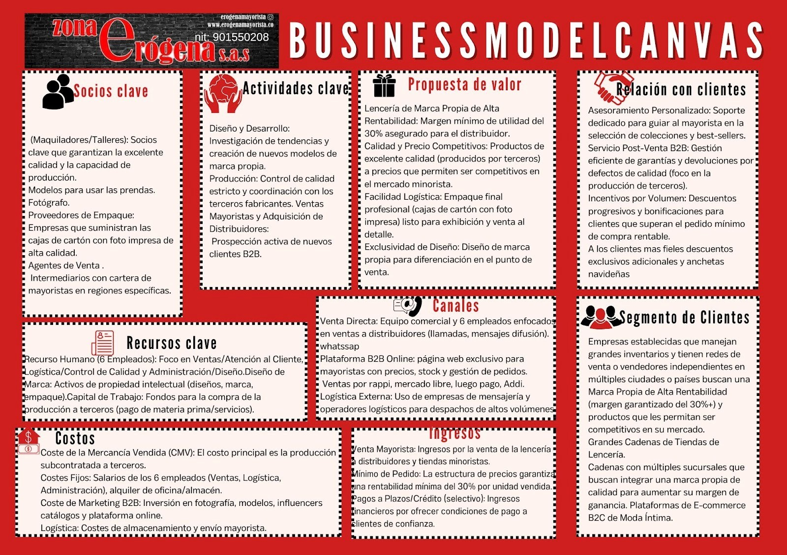
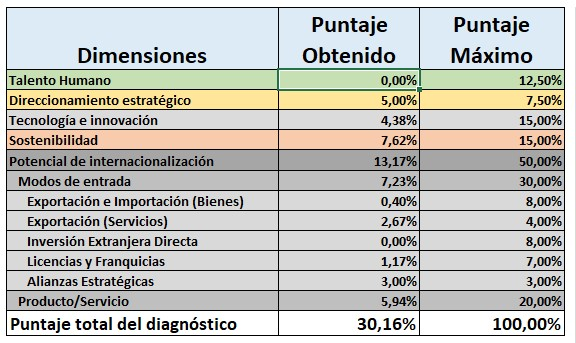
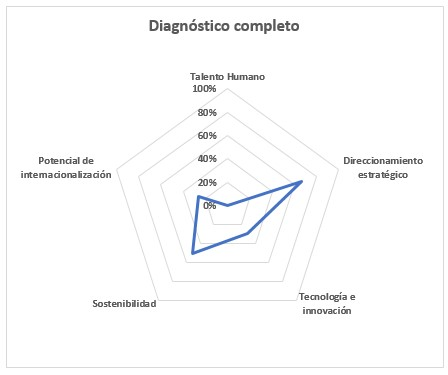
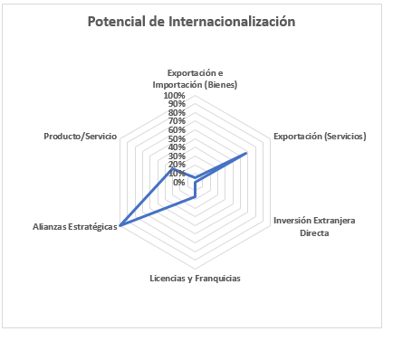
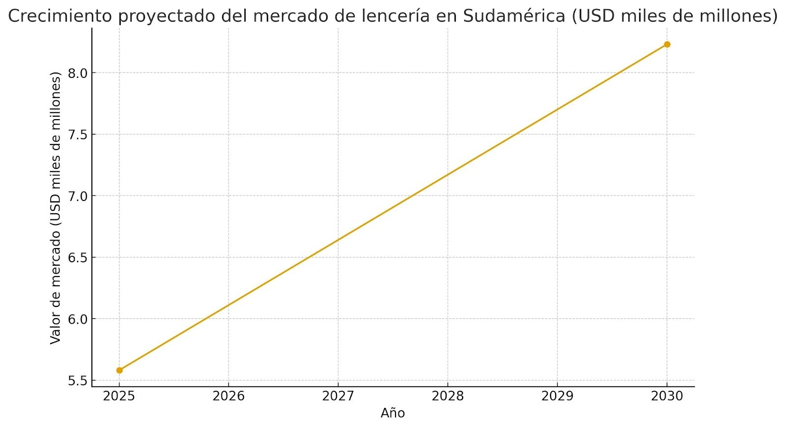
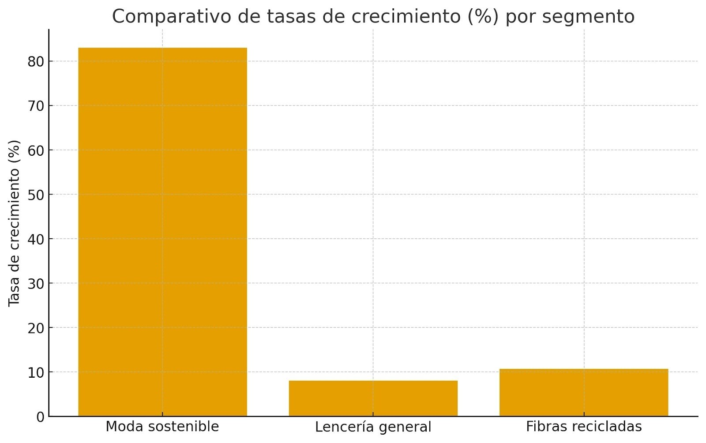
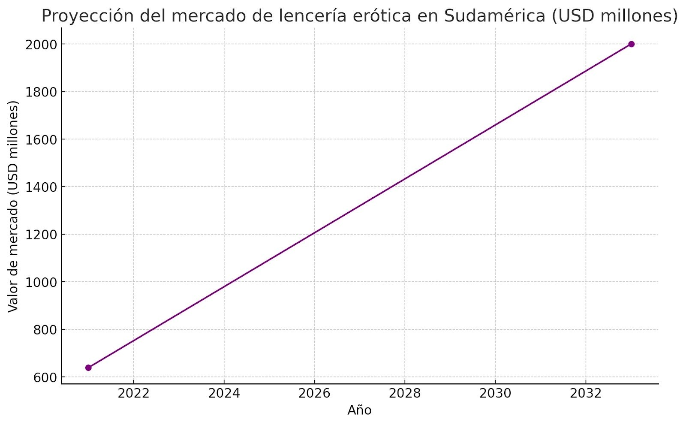
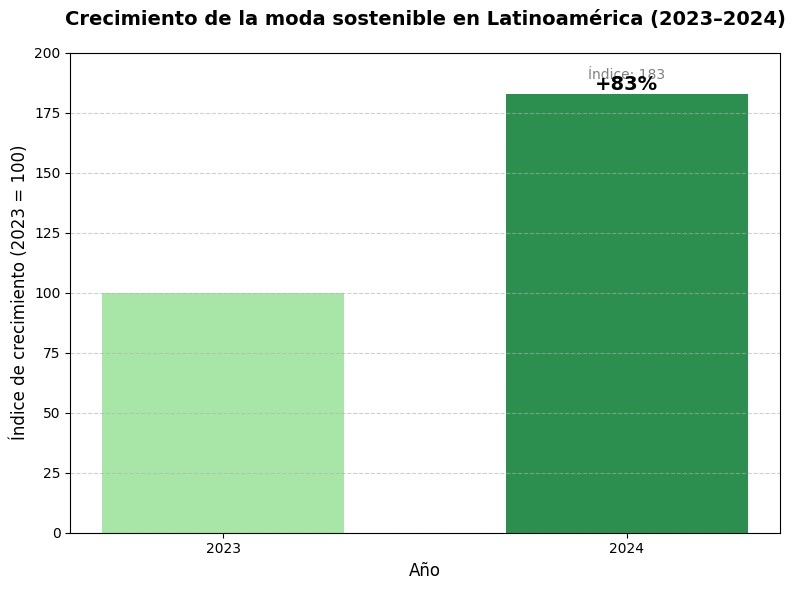

Nombre de la empresa ZONA ERÓGENA SAS NIT 901550208-2 Descripción del bien y/o servicio. Nuestra Historia: Una Decisión de Corazón y Agallas Todo comenzó en 2011, en un momento de incertidumbre. Mi esposo tuvo que renunciar a su empleo por motivos de salud, y de repente, nos encontramos sin un rumbo claro, pero con la necesidad urgente de emprender. No teníamos un plan de negocios formal, solo una motivación que venía del corazón y la fe. Descubrimos el anillo vibrador. Lo probamos, nos fascinó su potencial, y en ese momento, supimos que habíamos encontrado nuestro nicho. Decidimos invertir en el sector del bienestar sexual, un mercado que, aunque inexplorado por nosotros, nos ofrecía la promesa de lo novedoso y vanguardista. Con el tiempo, nos asociamos con mi primo, consolidando este sueño como un auténtico proyecto familiar. Nuestro Modelo de Negocio: La Evolución de la Distribución Nuestra empresa nació en Medellín, en las Torres de Bombona, con la venta por catálogo y una red de pedidos. Rápidamente entendimos que la clave estaba en el volumen y la distribución B2B. Hoy, operamos como un motor de distribución de artículos para adultos, con canales robustos al por mayor y al detalle, tanto en nuestra tienda física en Medellín como a través de la venta online que nos conecta con toda Colombia. Esta estructura dual nos permite una gran flexibilidad, vendiendo en plataformas digitales como Rappi, Mercado Libre y Luego Pago, y manteniendo nuestro catálogo siempre activo. El Próximo Gran Paso: Nuestra Marca de Lencería Hemos decidido ir más allá de la distribución. La lencería de marca propia es mi pasión, y soy la encargada de diseñarla. Es un segmento en el que podemos controlar la calidad, el diseño y, más importante aún, el margen. La producción está tercerizada, lo que nos permite mantenernos ágiles y enfocarnos en lo que realmente importa: diseñar para el éxito del distribuidor. Identidad y Visión: Calidad, Respeto y Liderazgo Nuestra brújula estratégica está definida por una visión clara de hacia dónde queremos llevar la empresa y, ahora, nuestra lencería. Aspecto Declaración Central Foco Estratégico Misión Proveer productos de alta calidad y vanguardia a nuestros clientes mayoristas, garantizando siempre la privacidad, el respeto y la discreción. Ser un socio profesional que garantiza la confianza y la calidad del inventario del distribuidor. Visión Ser el líder del mercado mayorista de artículos para adultos en América Latina, transformando la industria a través de la innovación y el bienestar sexual positivo. La lencería es nuestra herramienta para la expansión internacional y el liderazgo en América Latina. Valores Confianza, Calidad, Innovación, Respeto y Confidencialidad. Estos valores son la base de nuestra estrategia B2B: asegurar que la calidad sea impecable y que la relación comercial sea transparente. Mirando hacia la Exportación Nuestra lencería de diseño propio está lista para el escenario internacional. Al controlar el diseño y tercerizar la producción, hemos creado un producto de excelente calidad con una estructura de costes que nos permite ofrecer una alta rentabilidad a los mayoristas internacionales. La expansión a nuevos mercados es el paso natural para cumplir nuestra visión de ser líderes en América Latina. No estamos solo vendiendo ropa interior; estamos exportando diseño, calidad y una propuesta de negocio que garantiza el éxito de nuestros socios. Desarrollo del Business Model Canvas: https://www.canva.com/design/DAG22ELhXrM/U938_ntANYM1zAKdDWC2JA/edit?ui=eyJBIjp7fX0  Diagnóstico de potencialidades de internacionalización: diligencie el formato  Resultado de diagnostico completo  Resultado de diagnostico potencial  1. Vector Dominante: Alianzas Estratégicas (Aproximadamente 90%) Este es el vector más fuerte, indicando que el modelo ideal de internacionalización es a través de la colaboración con terceros. Implicación para Zona Erógena: La empresa no busca asumir el 100% del riesgo o el capital requerido para establecer operaciones propias en el extranjero. Enfoque Sugerido: Acuerdos de Distribución Exclusiva B2B: Asociarse con mayoristas o distribuidores locales en el mercado objetivo (e.g., México o Perú). Ellos se encargarían de la logística local, aduanas, inventario y la red de ventas, mientras Zona Erógena se enfoca en el diseño, la producción y el branding. Alianzas en Producción: Si el objetivo es reducir costes de aranceles, una alianza estratégica podría implicar la subcontratación de la fase final del ensamblaje o empaque en el país de destino, manteniendo el diseño y el control de calidad principal desde Medellín. 2. Vector Secundario Fuerte: Exportación (Bienes) y Producto/Servicio (Aproximadamente 30-40%) Estos vectores muestran la intención de ingresar al mercado principalmente a través del movimiento físico de la lencería y la fortaleza del producto en sí. Exportación de Bienes (Lencería): Con un valor moderado a alto (cercano al 40%), confirma que la estrategia inicial es la exportación directa o indirecta de la lencería desde Colombia. Esto es coherente con el modelo actual de producción tercerizada, que permite escalar la producción para la venta mayorista internacional. Producto/Servicio: Un potencial similar (cercano al 30-40%) indica que la empresa cree que el diseño y la calidad de la lencería (su propuesta de valor) son suficientemente diferenciadores para atraer la demanda extranjera por sí mismos. 3. Vectores de Bajo Potencial (Estrategias de Alto Riesgo) Los valores más bajos señalan estrategias que la empresa no considera viables o deseables en su etapa actual de expansión. Inversión Extranjera Directa (IED): El valor es cercano al 0%. Esto es muy lógico, ya que la IED (abrir tiendas físicas, almacenes o fábricas propias en el extranjero) es la estrategia más costosa, riesgosa y requiere de un gran capital, algo que no encaja con una empresa familiar que valora la agilidad. Licencias y Franquicias: Con un potencial bajo (cercano al 10%), la empresa no ve viable otorgar los derechos de su marca y diseño a un tercero a cambio de regalías. Esto podría deberse a la necesidad de mantener el control total sobre la calidad y el branding de la lencería erótica, un factor sensible para la marca. Exportación de Servicios: El potencial es cercano al 5%. Dado que el producto principal es físico (lencería), la exportación de servicios (e.g., consultoría de diseño o gestión de e-commerce) no es el foco del negocio, por lo que su bajo potencial es esperado. Conclusión y Ruta de Internacionalización Sugerida El análisis del radar de potencial sugiere que la ruta de expansión más natural y estratégica para Zona Erógena S.A.S. es un modelo de Alianza Estratégica Ligera (Asset-Light): Fase Inicial (Bajo Riesgo): Utilizar la exportación de bienes para testear mercados con alianzas estratégicas (distribuidores mayoristas o agentes de venta). Mantenimiento del Control: Priorizará acuerdos donde el distribuidor local asume el riesgo de inventario y la logística de última milla, permitiendo a Zona Erógena mantener el control sobre el diseño, la producción y el margen de rentabilidad (la base de su Propuesta de Valor). Evitar Costos Fijos Altos: Evitará cualquier movimiento que implique IED o grandes inversiones en infraestructura, manteniendo el foco en el diseño y el sourcing. ANALISIS DOFA FORTALEZAS Direccionamiento estratégico sólido La empresa demuestra claridad en sus objetivos, misión y visión. Este puntaje refleja una gestión consciente y una estructura organizacional orientada a resultados. Gracias a esta planificación, Zona Erógena ha logrado mantener coherencia entre su propósito de marca y sus estrategias comerciales, lo que le permite proyectarse de forma profesional en el mercado erótico y de bienestar. Sostenibilidad La sostenibilidad es una fortaleza importante porque la empresa integra prácticas responsables y éticas en su modelo de negocio. Esto no solo mejora su reputación frente a clientes con conciencia ambiental y social, sino que también refuerza su autenticidad y compromiso con el bienestar integral, aspecto que encaja muy bien con el enfoque del sector del bienestar sexual. Exportación de servicios El buen desempeño en esta dimensión refleja que la empresa tiene potencial para ofrecer no solo productos, sino también servicios complementarios, como asesorías, experiencias o educación sexual responsable. Esto diversifica su portafolio y abre la puerta a mercados internacionales interesados en marcas que ofrezcan experiencias integrales más allá del producto físico. Alianzas estratégicas Aunque no aparece como variable aislada en el DPI, se infiere como fortaleza gracias al alto puntaje en direccionamiento estratégico. Zona Erógena ha logrado establecer colaboraciones con proveedores, distribuidores, creadores de contenido o plataformas digitales que amplían su alcance y credibilidad. Estas alianzas le permiten mejorar su posicionamiento, aumentar visibilidad y fortalecer su red comercial, algo crucial en un sector donde la confianza del consumidor es determinante. DEBILIDADES Talento humano El puntaje más bajo de todo el diagnóstico muestra que la empresa tiene falencias internas relacionadas con la gestión del personal: falta de capacitación, roles poco definidos o una estructura operativa limitada. Esto puede generar ineficiencias, baja productividad y dificultades para sostener el crecimiento. Desarrollar competencias en atención al cliente, innovación y gestión digital sería fundamental para mejorar este punto. Inversión extranjera directa La falta de inversión externa limita la posibilidad de expansión acelerada, ya que el negocio depende únicamente de sus propios recursos. Sin apoyo financiero o inversionistas, la empresa podría quedarse corta al intentar abrir nuevos mercados o escalar su producción. Bajo desempeño en exportación e importación de bienes Este resultado evidencia poca experiencia logística internacional. Sin una estructura que soporte exportaciones físicas o importaciones de insumos, el crecimiento global se vuelve lento y costoso. Es necesario fortalecer alianzas con operadores logísticos y conocer regulaciones internacionales para optimizar esta parte del negocio. Limitado uso de tecnología e innovación Aunque la empresa ha avanzado en digitalización, el puntaje muestra que aún no aprovecha del todo las herramientas tecnológicas. Esto puede implicar carencias en automatización, análisis de datos, marketing digital o comercio electrónico, aspectos hoy esenciales para competir y escalar en el sector. Licencias y franquicias Este puntaje bajo muestra que Zona Erógena aún no explora modelos de expansión mediante licencias o franquicias. Esto es una debilidad porque limita la posibilidad de crecer mediante la replicación de su modelo de negocio en otros países o regiones. Fortalecer esta línea abriría nuevas fuentes de ingresos. Producto o servicio El valor bajo obtenido indica que el portafolio actual requiere mayor diferenciación e innovación. Aunque los productos tienen una identidad definida, deben evolucionar para adaptarse a diversos mercados y preferencias. La mejora continua del diseño, materiales y experiencia de usuario será clave para competir globalmente. OPORTUNIDADES Potencial de internacionalización Aunque el puntaje es moderado, indica una oportunidad real de expansión. La empresa tiene los fundamentos para posicionarse en mercados internacionales, especialmente en países donde el bienestar sexual se trata con mayor naturalidad. Puede aprovechar plataformas de e-commerce, marketplaces y colaboraciones internacionales. Modos de entrada Este puntaje sugiere que existen bases para explorar distintas estrategias de ingreso a nuevos mercados: exportación directa, alianzas, distribución o licencias. Con una planificación adecuada, puede aprovechar esta flexibilidad para adaptarse a las condiciones de cada país objetivo. Auge del bienestar sexual y cambio cultural global La creciente apertura hacia la sexualidad y la autoaceptación representa una gran oportunidad de crecimiento. El mercado busca marcas que promuevan el bienestar, la confianza corporal y la sexualidad consciente, valores que encajan perfectamente con la identidad de Zona Erógena. Avances tecnológicos accesibles Las herramientas digitales como el marketing automatizado, la analítica de datos y la inteligencia artificial son más asequibles que nunca. Adoptarlas permitiría optimizar campañas, personalizar experiencias y ampliar su alcance sin depender tanto de infraestructura física. AMENAZAS Alta competencia en el sector erótico y de lencería El mercado es altamente competitivo, con marcas internacionales posicionadas y actores locales emergentes. Si Zona Erógena no fortalece su propuesta de valor diferencial (diseño, experiencia y sostenibilidad), puede verse desplazada por competidores con mayor presencia digital. Prejuicios sociales y culturales En el contexto colombiano aún persisten tabúes y juicios sobre la sexualidad. Esto limita la exposición en medios tradicionales y puede generar barreras para la comunicación abierta de marca. La estrategia de marketing debe enfocarse en la educación y el empoderamiento para contrarrestarlo. Variabilidad del tipo de cambio (TRM) y costos de importación Las fluctuaciones del dólar afectan los precios de insumos y los márgenes de ganancia. Esto puede encarecer los productos o reducir la rentabilidad, especialmente si los materiales son importados. Relación con las tres dimensiones de la sostenibilidad (social, ambiental y económica) Zona Erógena Lencería promueve una visión integral de sostenibilidad que abarca las dimensiones social, ambiental y económica, alineando su propósito de marca con la responsabilidad y el bienestar colectivo. 1.Dimensión social: Zona Erógena Lencería promueve la inclusión, la libertad y la diversidad desde su esencia. Aunque su línea está enfocada en lencería femenina y masculina , la marca mantiene una postura abierta e incluyente hacia la comunidad LGBTQ+ y hacia todas las personas que deseen disfrutar de la sensualidad sin estereotipos ni etiquetas. La empresa fomenta el empoderamiento femenino y la aceptación del cuerpo, transmitiendo mensajes de amor propio, respeto y libertad personal. Además, impulsa la generación de empleo digno a través de talleres locales conformados principalmente por mujeres cabeza de familia, contribuyendo al desarrollo social y económico de sus comunidades. Con sus campañas y mensajes, Zona Erógena busca derribar tabúes y promover una sexualidad consciente y libre de prejuicios, donde cualquier persona pueda sentirse representada, segura y bienvenida. De esta forma, la empresa integra la sostenibilidad social con una propuesta que valora la diversidad, la igualdad y la inclusión real. 2. Dimensión ambiental: Zona Erógena Lencería adopta prácticas responsables en el uso de materiales y empaques. Sus prendas se elaboran con telas como algodón, nylon, spandex y lamé, priorizando proveedores con procesos sostenibles y bajo consumo de agua. Los empaques se realizan en bolsas selladas y cajas de cartón reciclable, reduciendo la huella ambiental y favoreciendo la reutilización. La empresa busca generar conciencia sobre el consumo responsable y la moda sostenible dentro del sector de la lencería sensual. 3. Dimensión económica: Desde la dimensión económica, la marca busca crecer de manera sostenida mediante la expansión hacia Centroamérica y Latinoamérica, con el propósito de consolidarse como una marca referente en el segmento de lencería sensual y consciente. Este crecimiento generará nuevas oportunidades de empleo, alianzas comerciales y fortalecimiento de la industria textil regional, promoviendo un comercio ético y competitivo que impulse la economía local y regional. Objetivo de internacionalización (Metodología SMART) Objetivo general: Expandir la presencia de Zona Erógena Lencería en Centroamérica y Latinoamérica durante los próximos tres años, mediante la exportación directa de lencería sensual sostenible, posicionando la marca como un referente regional en bienestar, feminidad y sensualidad consciente. Objetivo SMART: •Específico: Ingresar a los mercados de Centroamérica y Latinoamérica con la línea de lencería sensual sostenible, dirigida a mujeres entre 18 y 65 años que buscan productos de calidad y ajuste perfecto con identidad y propósito. •Medible: Alcanzar una participación del 5 % del mercado regional en el segmento de lencería premium y aumentar las ventas internacionales en un 20 % anual durante el periodo 2025–2028. •Alcanzable: La empresa cuenta con materiales de alta calidad, procesos productivos consolidados, proveedores confiables y alianzas con distribuidores locales en países estratégicos como México, Panamá, Costa Rica, Chile, Perú y Argentina.Brasil,Curazao,Aruba,Rep dominicana •Relevante: La internacionalización permitirá proyectar una marca latinoamericana con propósito sostenible, fortaleciendo el empoderamiento femenino y masculino en la competitividad regional en el sector textil. •Temporal: Lograr el posicionamiento de marca y la consolidación comercial en al menos cinco países de Centroamérica y Latinoamérica antes del año 2028. Relación con el diagnóstico de potencialidades: El diagnóstico de potencialidades evidencia que Zona Erógena Lencería cuenta con una propuesta de valor sólida, materiales diferenciados y una identidad de marca coherente con las tendencias globales de sostenibilidad y bienestar. Estas características la posicionan con alto potencial para competir en los mercados latinoamericanos, donde el interés por la moda consciente y los productos de bienestar está en crecimiento. Justificación de la elección del producto o servicio en el contexto de los mercados internacionales La elección del producto de Zona Erógena S.A.S., centrado en la lencería sensual sostenible, se justifica en la creciente demanda internacional por prendas íntimas que combinen estilo, confort, sostenibilidad e inclusión. En los últimos años, el mercado global de la lencería ha mostrado un crecimiento sostenido impulsado por la digitalización, la expansión del comercio electrónico y la preferencia por marcas con propósito. En el caso de América Latina y Centroamérica, el mercado de la lencería registra un crecimiento promedio anual del 8 %, con proyección de pasar de USD 5,5 mil millones en 2025 a USD 8,2 mil millones en 2030 (Mordor Intelligence, 2025). Este crecimiento se debe al aumento del consumo de moda íntima, la influencia de las redes sociales en las tendencias de bienestar y autoexpresión, y la expansión de marcas locales que compiten con firmas internacionales. Además, las tendencias globales hacia la sostenibilidad están transformando el sector textil. Según Universo Mola (2024), la moda sostenible creció un 83 % en Latinoamérica entre 2023 y 2024, reflejando un cambio en las preferencias de los consumidores hacia productos con impacto ambiental y social positivo. La propuesta de Zona Erógena, basada en el uso de materiales sostenibles, empaques reciclables y mensajes de inclusión y diversidad, se alinea directamente con estas tendencias, otorgándole una ventaja competitiva frente a competidores tradicionales. Asimismo, la categoría de lencería sensual y premium presenta un dinamismo notable. De acuerdo con Cognitive Market Research (2024), el mercado de lencería erótica en Sudamérica se proyecta a crecer de USD 639 millones en 2021 a más de USD 2.000 millones en 2033, con una tasa de crecimiento del 10 % anual. Esto demuestra la existencia de un nicho rentable y en expansión que responde a la búsqueda de productos asociados con el bienestar, la autoaceptación y la sensualidad consciente. En el contexto de los mercados internacionales, la lencería de Zona Erógena combina tres factores clave que justifican su potencial de éxito: Propuesta diferenciada, al integrar sostenibilidad, inclusión y sensualidad consciente. Tendencias favorables, que reflejan el auge de la moda ética y el empoderamiento personal en el consumo. Capacidad productiva consolidada, con proveedores locales y procesos adaptables a la demanda internacional. Por estas razones, la elección de este producto resulta coherente con las condiciones actuales del mercado global y con las oportunidades de expansión hacia los mercados latinoamericanos. Análisis del sector en los países objetivo Tamaño del sector / crecimiento En la región de Sudamérica, el mercado de lencería se estima en USD 5,58 mil millones para 2025, con proyección de alcanzar USD 8,23 mil millones para 2030, correspondiendo a una tasa de crecimiento anual compuesta (CAGR) de ~8,08%. Mordor Intelligence En cuanto a importaciones de textiles y confecciones, por ejemplo en México se observa que las importaciones del grupo “Textiles y Confecciones” (capítulos HS 50-63) siguen siendo significativas. World Integrated Trade Solution+1 Aunque es difícil acceder al dato exacto para lencería premium/sostenible para cada país sin suscripción completa a TradeMap, plataformas de inteligencia como EximPedia muestran que la categoría “lingerie” tiene flujos de importación detectables hacia países latinoamericanos. eximpedia Datos país-por-país para mercados objetivo Aquí se presentan algunos datos relevantes para los principales mercados que has señalado (México, Chile, Perú, Argentina, Panamá, Costa Rica) aunque con la advertencia de que para una investigación completa se requeriría acceso de pago a TradeMap para obtener valores exactos de “lencería sensual sostenible”. México: Las importaciones de textiles y confecciones (HS 50-63) muestran que México importa desde varios orígenes (China, EE.UU., Vietnam, Bangladesh, India) en 2022. World Integrated Trade Solution+1 Además, se ha informado que México elevó tarifas de importación de prendas de vestir y textiles en diciembre de 2024, lo cual afecta la entrada de productos importados. fibre2fashion.com Chile: Aunque no se encuentra un valor exacto público sencillo para lencería, listas de importadores muestran que Chile registra importaciones activas de ropa interior/underwear. exportgenius.in Perú: Plataformas muestran importadores de underwear en Perú, lo que demuestra que existe demanda en ese nicho. seair.co.in Argentina: Dentro del análisis regional de Sudamérica el reporte de mercado incluye a Argentina como uno de los mercados de la lencería. Mordor Intelligence Panamá y Costa Rica: No se presentan datos específicos públicos suficientes para este análisis rápido, pero al considerar la conectividad logística y perfil de consumo, son mercados atractivos para expansión. Tendencias relevantes Se observa que el canal de comercio electrónico está creciendo con fuerza, permitiendo a marcas internacionales o regionales acceder a consumidores sin infraestructura física extensiva. Mordor Intelligence La categoría “premium” y los materiales sostenibles muestran tasas de crecimiento mayores que el segmento de masa. En el reporte regional, los “fibers reciclados y bio-basados” tienen una tasa de crecimiento proyectada del ~10,64%. Mordor Intelligence En Latinoamérica, la moda sostenible ha registrado crecimiento significativo (por ejemplo, se cita un crecimiento del ~83 % para la moda sostenible en la región) lo cual indica apertura del consumidor hacia propuestas con valor social/ambiental diferenciado. Competencia y barreras Las importaciones sustanciales de textiles/confecciones sugieren que los mercados objetivo ya están abiertos a productos importados, pero también implican presencia de competencia internacional. Elevadas tarifas de importación en mercados como México (por ejemplo el incremento al 35 % aplicado a prendas de vestir a finales de 2024) representan una barrera que debe tenerse en cuenta. Sandler, Travis & Rosenberg, P.A.+1 Adaptación al mercado local (tallas, diseño, mensaje, canales) es clave: no basta con llegada regional, sino ajuste local. Diferenciación por valor (sostenibilidad, inclusión, diseño latinoamericano) puede reducir la presión competitiva del precio. Oportunidad para la empresa Dado que los mercados objetivo presentan demanda, importaciones activas, y crecimiento especialmente en segmentos premium/sostenibles, existe ventaja estratégica para una marca como la tuya que ofrece lencería sensual, sostenible e inclusiva. Al originarse en la región (Latinoamérica), la marca puede aprovechar narrativa de “marca regional con propósito” frente a marcas globales que operan masivamente. La entrada mediante e-commerce y/o distribuidores locales permitirá minimizar inversión en infraestructura, y responder ágilmente a tendencias de consumo. Los datos comerciales respaldan que hay flujo de importaciones y que los consumidores están dispuestos a adquirir productos íntimos con diferenciación, lo cual da soporte al plan de internacionalización. Riesgos / consideraciones Necesidad de investigar aranceles específicos para cada país y categoría (por ejemplo tarifas elevadas en México). Necesidad de adaptar la propuesta de producto al mercado local (preferencias, tallas, estilo, cultura de lencería). Logística de envío, devoluciones, servicio al cliente internacional y marketing local serán fundamentales. Aunque el crecimiento es prometedor, la rentabilidad requerirá observar coste de entrada vs precio premium. Monitorear competidores locales e internacionales que ya podrían estar incorporando líneas sostenibles.   